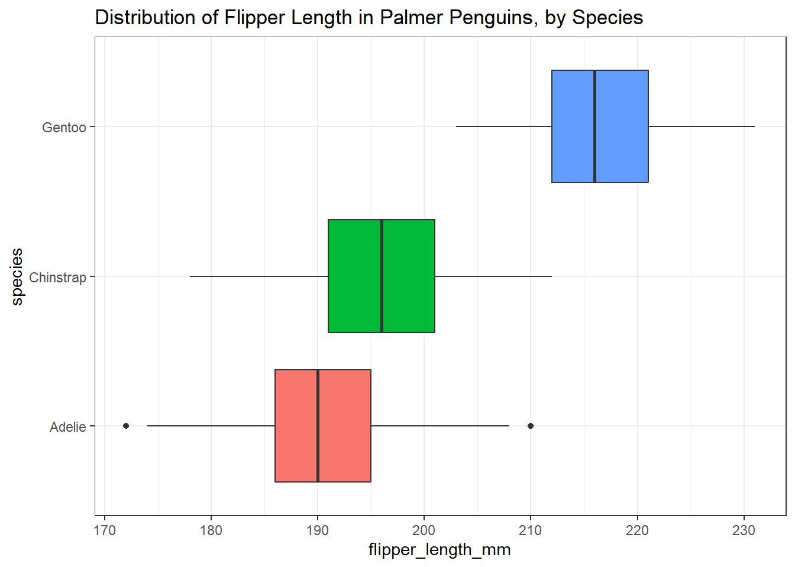

knitr::opts_chunk$set(comment = NA)
library(palmerpenguins)
library(kableExtra)
library(gtsummary)
library(summarytools)
library(visdat)
library(lvplot)
library(tidyverse)
theme_set(theme_bw())3 Summarizing Penguins
We will again use the data contained in the palmerpenguins package in this chapter. Here, we present a few of the more appealing ways to obtain numerical and graphical summaries, without much explanation. We’ll discuss these issues further in the rest of Part A of these Course Notes.
3.1 Setup: Packages Used Here
Here, we’ll add several new packages to allow us to display some additional summaries, and present our tables and plots in different ways.
We will also use functions from the mosaic and Hmisc packages here, though I won’t load them into our session at this time.
3.2 Our Data Set
Let’s look again at the penguins data contained in the palmerpenguins package.
penguins# A tibble: 344 × 8
species island bill_length_mm bill_depth_mm flipper_length_mm body_mass_g
<fct> <fct> <dbl> <dbl> <int> <int>
1 Adelie Torgersen 39.1 18.7 181 3750
2 Adelie Torgersen 39.5 17.4 186 3800
3 Adelie Torgersen 40.3 18 195 3250
4 Adelie Torgersen NA NA NA NA
5 Adelie Torgersen 36.7 19.3 193 3450
6 Adelie Torgersen 39.3 20.6 190 3650
7 Adelie Torgersen 38.9 17.8 181 3625
8 Adelie Torgersen 39.2 19.6 195 4675
9 Adelie Torgersen 34.1 18.1 193 3475
10 Adelie Torgersen 42 20.2 190 4250
# ℹ 334 more rows
# ℹ 2 more variables: sex <fct>, year <int>3.3 Numerical Summaries for a Tibble
Note that in this work, I sometimes don’t explain all of the numerical summaries provided. Some of that discussion is postponed to Chapter 7.
3.3.1 Using summary()
We have several ways to obtain useful summaries of all variables in the penguins data.
penguins |>
summary() species island bill_length_mm bill_depth_mm
Adelie :152 Biscoe :168 Min. :32.10 Min. :13.10
Chinstrap: 68 Dream :124 1st Qu.:39.23 1st Qu.:15.60
Gentoo :124 Torgersen: 52 Median :44.45 Median :17.30
Mean :43.92 Mean :17.15
3rd Qu.:48.50 3rd Qu.:18.70
Max. :59.60 Max. :21.50
NA's :2 NA's :2
flipper_length_mm body_mass_g sex year
Min. :172.0 Min. :2700 female:165 Min. :2007
1st Qu.:190.0 1st Qu.:3550 male :168 1st Qu.:2007
Median :197.0 Median :4050 NA's : 11 Median :2008
Mean :200.9 Mean :4202 Mean :2008
3rd Qu.:213.0 3rd Qu.:4750 3rd Qu.:2009
Max. :231.0 Max. :6300 Max. :2009
NA's :2 NA's :2
3.3.2 Using inspect() from mosaic
Some people like the inspect() function from the mosaic package.
penguins |>
mosaic::inspect()
categorical variables:
name class levels n missing
1 species factor 3 344 0
2 island factor 3 344 0
3 sex factor 2 333 11
distribution
1 Adelie (44.2%), Gentoo (36%) ...
2 Biscoe (48.8%), Dream (36%) ...
3 male (50.5%), female (49.5%)
quantitative variables:
name class min Q1 median Q3 max mean
1 bill_length_mm numeric 32.1 39.225 44.45 48.5 59.6 43.92193
2 bill_depth_mm numeric 13.1 15.600 17.30 18.7 21.5 17.15117
3 flipper_length_mm integer 172.0 190.000 197.00 213.0 231.0 200.91520
4 body_mass_g integer 2700.0 3550.000 4050.00 4750.0 6300.0 4201.75439
5 year integer 2007.0 2007.000 2008.00 2009.0 2009.0 2008.02907
sd n missing
1 5.4595837 342 2
2 1.9747932 342 2
3 14.0617137 342 2
4 801.9545357 342 2
5 0.8183559 344 0Daniel Kaplan’s Statistical Modeling, 2nd edition provides an entire course which coordinates nicely with the tools available in the mosaic package. In our course, we’ll most often use this inspect() tool, and a related tool called favstats.
3.3.3 Using favstats() from mosaic.
The favstats function lets us look at some common summaries for a single variable, or for one variable divided into groups by another. We’ll also return to this approach in Chapter 7.
mosaic::favstats(~ bill_length_mm, data = penguins) |>
kbl() |>
kable_styling()| min | Q1 | median | Q3 | max | mean | sd | n | missing | |
|---|---|---|---|---|---|---|---|---|---|
| 32.1 | 39.225 | 44.45 | 48.5 | 59.6 | 43.92193 | 5.459584 | 342 | 2 |
mosaic::favstats(bill_length_mm ~ species, data = penguins) |>
kbl() |>
kable_styling()| species | min | Q1 | median | Q3 | max | mean | sd | n | missing |
|---|---|---|---|---|---|---|---|---|---|
| Adelie | 32.1 | 36.75 | 38.80 | 40.750 | 46.0 | 38.79139 | 2.663405 | 151 | 1 |
| Chinstrap | 40.9 | 46.35 | 49.55 | 51.075 | 58.0 | 48.83382 | 3.339256 | 68 | 0 |
| Gentoo | 40.9 | 45.30 | 47.30 | 49.550 | 59.6 | 47.50488 | 3.081857 | 123 | 1 |
3.3.4 Using describe() from psych
We can use the describe() function from the psych package to get some additional summaries, if we’re interested, and here we also demonstrate the use of the kbl() and kable_styling() functions from the kableExtra package to make the table look appealing in HTML. More on the use of the kableExtra package is available here. We’ll also return to this approach in Chapter 7.
penguins |>
psych::describe() |>
kbl() |>
kable_styling()| vars | n | mean | sd | median | trimmed | mad | min | max | range | skew | kurtosis | se | |
|---|---|---|---|---|---|---|---|---|---|---|---|---|---|
| species* | 1 | 344 | 1.918605 | 0.8933198 | 2.00 | 1.898551 | 1.48260 | 1.0 | 3.0 | 2.0 | 0.1591315 | -1.7318773 | 0.0481646 |
| island* | 2 | 344 | 1.662791 | 0.7261940 | 2.00 | 1.579710 | 1.48260 | 1.0 | 3.0 | 2.0 | 0.6086049 | -0.9064333 | 0.0391538 |
| bill_length_mm | 3 | 342 | 43.921930 | 5.4595837 | 44.45 | 43.906934 | 7.04235 | 32.1 | 59.6 | 27.5 | 0.0526530 | -0.8931397 | 0.2952205 |
| bill_depth_mm | 4 | 342 | 17.151170 | 1.9747932 | 17.30 | 17.172628 | 2.22390 | 13.1 | 21.5 | 8.4 | -0.1422086 | -0.9233523 | 0.1067846 |
| flipper_length_mm | 5 | 342 | 200.915205 | 14.0617137 | 197.00 | 200.335766 | 16.30860 | 172.0 | 231.0 | 59.0 | 0.3426554 | -0.9991866 | 0.7603704 |
| body_mass_g | 6 | 342 | 4201.754386 | 801.9545357 | 4050.00 | 4154.014598 | 889.56000 | 2700.0 | 6300.0 | 3600.0 | 0.4662117 | -0.7395200 | 43.3647348 |
| sex* | 7 | 333 | 1.504504 | 0.5007321 | 2.00 | 1.505618 | 0.00000 | 1.0 | 2.0 | 1.0 | -0.0179376 | -2.0056743 | 0.0274400 |
| year | 8 | 344 | 2008.029070 | 0.8183559 | 2008.00 | 2008.036232 | 1.48260 | 2007.0 | 2009.0 | 2.0 | -0.0532601 | -1.5092478 | 0.0441228 |
3.3.5 Using describe() from Hmisc
One approach Frank Harrell has developed that I find helpful is the describe() function within his Hmisc package, which produces these results. We’ll also return to this approach in Chapter 7.
penguins |>
Hmisc::describe() penguins
8 Variables 344 Observations
--------------------------------------------------------------------------------
species
n missing distinct
344 0 3
Value Adelie Chinstrap Gentoo
Frequency 152 68 124
Proportion 0.442 0.198 0.360
--------------------------------------------------------------------------------
island
n missing distinct
344 0 3
Value Biscoe Dream Torgersen
Frequency 168 124 52
Proportion 0.488 0.360 0.151
--------------------------------------------------------------------------------
bill_length_mm
n missing distinct Info Mean Gmd .05 .10
342 2 164 1 43.92 6.274 35.70 36.60
.25 .50 .75 .90 .95
39.23 44.45 48.50 50.80 51.99
lowest : 32.1 33.1 33.5 34 34.1, highest: 55.1 55.8 55.9 58 59.6
--------------------------------------------------------------------------------
bill_depth_mm
n missing distinct Info Mean Gmd .05 .10
342 2 80 1 17.15 2.267 13.9 14.3
.25 .50 .75 .90 .95
15.6 17.3 18.7 19.5 20.0
lowest : 13.1 13.2 13.3 13.4 13.5, highest: 20.7 20.8 21.1 21.2 21.5
--------------------------------------------------------------------------------
flipper_length_mm
n missing distinct Info Mean Gmd .05 .10
342 2 55 0.999 200.9 16.03 181.0 185.0
.25 .50 .75 .90 .95
190.0 197.0 213.0 220.9 225.0
lowest : 172 174 176 178 179, highest: 226 228 229 230 231
--------------------------------------------------------------------------------
body_mass_g
n missing distinct Info Mean Gmd .05 .10
342 2 94 1 4202 911.8 3150 3300
.25 .50 .75 .90 .95
3550 4050 4750 5400 5650
lowest : 2700 2850 2900 2925 2975, highest: 5850 5950 6000 6050 6300
--------------------------------------------------------------------------------
sex
n missing distinct
333 11 2
Value female male
Frequency 165 168
Proportion 0.495 0.505
--------------------------------------------------------------------------------
year
n missing distinct Info Mean Gmd
344 0 3 0.888 2008 0.8919
Value 2007 2008 2009
Frequency 110 114 120
Proportion 0.320 0.331 0.349
For the frequency table, variable is rounded to the nearest 0
--------------------------------------------------------------------------------
3.3.6 Using tbl_summary() from gtsummary
If you want to produce results which look like you might expect to see in a published paper, the tbl_summary() function from the gtsummary package has many nice features.
penguins |>
tbl_summary()| Characteristic | N = 3441 |
|---|---|
| species | |
| Adelie | 152 (44%) |
| Chinstrap | 68 (20%) |
| Gentoo | 124 (36%) |
| island | |
| Biscoe | 168 (49%) |
| Dream | 124 (36%) |
| Torgersen | 52 (15%) |
| bill_length_mm | 44.5 (39.2, 48.5) |
| Unknown | 2 |
| bill_depth_mm | 17.30 (15.60, 18.70) |
| Unknown | 2 |
| flipper_length_mm | 197 (190, 213) |
| Unknown | 2 |
| body_mass_g | 4,050 (3,550, 4,750) |
| Unknown | 2 |
| sex | |
| female | 165 (50%) |
| male | 168 (50%) |
| Unknown | 11 |
| year | |
| 2007 | 110 (32%) |
| 2008 | 114 (33%) |
| 2009 | 120 (35%) |
| 1 n (%); Median (IQR) | |
A vignette explaining the use of the gtsummary package is available here. We’ll also return to this approach in Chapter 7.
3.3.6.1 Using descr from summarytools
The descr() function from the summarytools package can also be used to provide numerical descriptions of all of the numerical variables contained within a tibble.
penguins |>
descr(stats = "common" )Non-numerical variable(s) ignored: species, island, sexDescriptive Statistics
penguins
N: 344
bill_depth_mm bill_length_mm body_mass_g flipper_length_mm year
--------------- --------------- ---------------- ------------- ------------------- ---------
Mean 17.15 43.92 4201.75 200.92 2008.03
Std.Dev 1.97 5.46 801.95 14.06 0.82
Min 13.10 32.10 2700.00 172.00 2007.00
Median 17.30 44.45 4050.00 197.00 2008.00
Max 21.50 59.60 6300.00 231.00 2009.00
N.Valid 342.00 342.00 342.00 342.00 344.00
Pct.Valid 99.42 99.42 99.42 99.42 100.00An introduction to the summarytools package is available here, and illustrates some other ways to modify this output to suit your needs. We’ll also return to this approach in Chapter 7.
3.3.7 dfSummary() from summarytools
The dfSummary() function from the summarytools package can be used to provide some additional descriptions of all variables within a tibble. You’ll find more information about these numerical descriptions in Chapter 7.
dfSummary(penguins,
plain.ascii = FALSE,
style = "grid",
graph.magnif = 0.75,
valid.col = FALSE)### Data Frame Summary
#### penguins
**Dimensions:** 344 x 8
**Duplicates:** 0
+----+--------------------+---------------------------+---------------------+------------------------+---------+
| No | Variable | Stats / Values | Freqs (% of Valid) | Graph | Missing |
+====+====================+===========================+=====================+========================+=========+
| 1 | species\ | 1\. Adelie\ | 152 (44.2%)\ | IIIIIIII \ | 0\ |
| | [factor] | 2\. Chinstrap\ | 68 (19.8%)\ | III \ | (0.0%) |
| | | 3\. Gentoo | 124 (36.0%) | IIIIIII | |
+----+--------------------+---------------------------+---------------------+------------------------+---------+
| 2 | island\ | 1\. Biscoe\ | 168 (48.8%)\ | IIIIIIIII \ | 0\ |
| | [factor] | 2\. Dream\ | 124 (36.0%)\ | IIIIIII \ | (0.0%) |
| | | 3\. Torgersen | 52 (15.1%) | III | |
+----+--------------------+---------------------------+---------------------+------------------------+---------+
| 3 | bill_length_mm\ | Mean (sd) : 43.9 (5.5)\ | 164 distinct values | \ \ \ \ . \ \ \ \ . :\ | 2\ |
| | [numeric] | min < med < max:\ | | \ \ . : : : : :\ | (0.6%) |
| | | 32.1 < 44.5 < 59.6\ | | \ \ : : : : : :\ | |
| | | IQR (CV) : 9.3 (0.1) | | \ \ : : : : : : .\ | |
| | | | | : : : : : : : : . | |
+----+--------------------+---------------------------+---------------------+------------------------+---------+
| 4 | bill_depth_mm\ | Mean (sd) : 17.2 (2)\ | 80 distinct values | \ \ \ \ \ \ \ \ \ \ :\ | 2\ |
| | [numeric] | min < med < max:\ | | \ \ \ \ \ \ \ \ : :\ | (0.6%) |
| | | 13.1 < 17.3 < 21.5\ | | \ \ : . : : : .\ | |
| | | IQR (CV) : 3.1 (0.1) | | . : : : : : :\ | |
| | | | | : : : : : : : . . | |
+----+--------------------+---------------------------+---------------------+------------------------+---------+
| 5 | flipper_length_mm\ | Mean (sd) : 200.9 (14.1)\ | 55 distinct values | \ \ \ \ \ \ :\ | 2\ |
| | [integer] | min < med < max:\ | | \ \ \ \ . :\ | (0.6%) |
| | | 172 < 197 < 231\ | | \ \ \ \ : : : \ \ . .\ | |
| | | IQR (CV) : 23 (0.1) | | \ \ . : : : \ \ : : :\ | |
| | | | | \ \ : : : : : : : : : | |
+----+--------------------+---------------------------+---------------------+------------------------+---------+
| 6 | body_mass_g\ | Mean (sd) : 4201.8 (802)\ | 94 distinct values | \ \ \ \ :\ | 2\ |
| | [integer] | min < med < max:\ | | \ \ . :\ | (0.6%) |
| | | 2700 < 4050 < 6300\ | | \ \ : : : :\ | |
| | | IQR (CV) : 1200 (0.2) | | \ \ : : : : : .\ | |
| | | | | . : : : : : : | |
+----+--------------------+---------------------------+---------------------+------------------------+---------+
| 7 | sex\ | 1\. female\ | 165 (49.5%)\ | IIIIIIIII \ | 11\ |
| | [factor] | 2\. male | 168 (50.5%) | IIIIIIIIII | (3.2%) |
+----+--------------------+---------------------------+---------------------+------------------------+---------+
| 8 | year\ | Mean (sd) : 2008 (0.8)\ | 2007 : 110 (32.0%)\ | IIIIII \ | 0\ |
| | [integer] | min < med < max:\ | 2008 : 114 (33.1%)\ | IIIIII \ | (0.0%) |
| | | 2007 < 2008 < 2009\ | 2009 : 120 (34.9%) | IIIIII | |
| | | IQR (CV) : 2 (0) | | | |
+----+--------------------+---------------------------+---------------------+------------------------+---------+
3.3.8 Visualizing with visdat functions
The vis_dat() function from the visdat package shows something about the types of variables, providing visual clues about what’s inside. The picture below identifies variables types, and missing values.
vis_dat(penguins)
We can explore the missing data further using the vis_miss function.
vis_miss(penguins)A vignette explaining the use of the visdat package is available here.
3.4 Histograms for a Variable
The most common tool we use in producing a graphical summary of a variable, like the penguin’s flipper length, is a histogram. Here’s one option.
ggplot(data = penguins, aes(x = flipper_length_mm)) +
geom_histogram()`stat_bin()` using `bins = 30`. Pick better value with `binwidth`.Warning: Removed 2 rows containing non-finite outside the scale range
(`stat_bin()`).This approach produces two messages that alert us to potential concerns, and a fairly unattractive plot.
This time, we’ll first exclude the two penguins without a measured flipper length, and then set the binwidth to be 10. How well does that work?
penguins2 <-
penguins |>
filter(complete.cases(flipper_length_mm))
ggplot(data = penguins2, aes(x = flipper_length_mm)) +
geom_histogram(binwidth = 10)Now we’ve eliminated the messages, but it would be nice to have some more granularity in the bars (so we’d like a smaller binwidth) and I’d also like to make the bars more clearly separated with colors. I’d also like to add a title. Like this:
ggplot(data = penguins2, aes(x = flipper_length_mm)) +
geom_histogram(binwidth = 5, fill = "orange", col = "navy") +
labs(title = "Distribution of Flipper Length in 342 Palmer Penguins")There are some other options for creating a graphical summary of a variable’s distribution. For example, we might consider a density plot, as well as a rug plot along the horizontal (X) axis:
ggplot(data = penguins2, aes(x = flipper_length_mm)) +
geom_density(col = "navy") +
geom_rug(col = "red") +
labs(title = "Density and Rug Plot of Flipper Length in 342 Palmer Penguins")Or perhaps a dotplot would provide a useful look…
ggplot(data = penguins2, aes(x = flipper_length_mm)) +
geom_dotplot(binwidth = 1, fill = "orange", col = "navy") +
labs(title = "Dot Plot of Flipper Length in 342 Palmer Penguins")
We’ll learn about several other approaches to summarizing the distribution of a variable graphically later in the course.
3.5 Comparing Penguins by Species Numerically
We have data from three different species of penguin. Can we compare their flipper lengths numerically, perhaps by calculating the mean flipper length within each species?
# A tibble: 3 × 2
species `mean(flipper_length_mm)`
<fct> <dbl>
1 Adelie NA
2 Chinstrap 196.
3 Gentoo NA Well, that’s a problem. Looks like we have some missing values. Can we fix that, and also provide some additional summaries, like the sample size (n) and the median and standard deviation within each species? While we’re at it, can we make it prettier, with kbl() and kable_styling()?
penguins |>
filter(complete.cases(species, flipper_length_mm)) |>
group_by(species) |>
summarise(n = n(),
mean = mean(flipper_length_mm),
sd = sd(flipper_length_mm),
median = median(flipper_length_mm)) |>
kbl() |>
kable_styling(bootstrap_options = "striped", full_width = FALSE)| species | n | mean | sd | median |
|---|---|---|---|---|
| Adelie | 151 | 189.9536 | 6.539457 | 190 |
| Chinstrap | 68 | 195.8235 | 7.131894 | 196 |
| Gentoo | 123 | 217.1870 | 6.484976 | 216 |
3.6 Using favstats() from the mosaic package
As we noted previously, we can also use favstats() from the mosaic package to help us look at the results for a single variable, split into groups by another, like this:
mosaic::favstats(bill_length_mm ~ species, data = penguins) |>
kbl() |>
kable_styling()| species | min | Q1 | median | Q3 | max | mean | sd | n | missing |
|---|---|---|---|---|---|---|---|---|---|
| Adelie | 32.1 | 36.75 | 38.80 | 40.750 | 46.0 | 38.79139 | 2.663405 | 151 | 1 |
| Chinstrap | 40.9 | 46.35 | 49.55 | 51.075 | 58.0 | 48.83382 | 3.339256 | 68 | 0 |
| Gentoo | 40.9 | 45.30 | 47.30 | 49.550 | 59.6 | 47.50488 | 3.081857 | 123 | 1 |
One advantage of this approach is that (as you’ll note) it handles the missing data in the way we’d probably expect, by restricting the summaries to the complete cases.
3.7 Using tbl_summary() to summarize the tibble
The tbl_summary() function from the gtsummary package can also do the job of summarizing all of the other variables in the tibble, broken down by species, very nicely.
penguins |>
tbl_summary(by = species)| Characteristic | Adelie, N = 1521 | Chinstrap, N = 681 | Gentoo, N = 1241 |
|---|---|---|---|
| island | |||
| Biscoe | 44 (29%) | 0 (0%) | 124 (100%) |
| Dream | 56 (37%) | 68 (100%) | 0 (0%) |
| Torgersen | 52 (34%) | 0 (0%) | 0 (0%) |
| bill_length_mm | 38.8 (36.8, 40.8) | 49.6 (46.4, 51.1) | 47.3 (45.3, 49.6) |
| Unknown | 1 | 0 | 1 |
| bill_depth_mm | 18.40 (17.50, 19.00) | 18.45 (17.50, 19.40) | 15.00 (14.20, 15.70) |
| Unknown | 1 | 0 | 1 |
| flipper_length_mm | 190 (186, 195) | 196 (191, 201) | 216 (212, 221) |
| Unknown | 1 | 0 | 1 |
| body_mass_g | 3,700 (3,350, 4,000) | 3,700 (3,488, 3,950) | 5,000 (4,700, 5,500) |
| Unknown | 1 | 0 | 1 |
| sex | |||
| female | 73 (50%) | 34 (50%) | 58 (49%) |
| male | 73 (50%) | 34 (50%) | 61 (51%) |
| Unknown | 6 | 0 | 5 |
| year | |||
| 2007 | 50 (33%) | 26 (38%) | 34 (27%) |
| 2008 | 50 (33%) | 18 (26%) | 46 (37%) |
| 2009 | 52 (34%) | 24 (35%) | 44 (35%) |
| 1 n (%); Median (IQR) | |||
3.8 Comparing Penguins by Species Graphically
3.8.1 Faceting Histograms with facet_wrap()
We could compare the distributions of the flipper lengths across the three species, by creating a set of faceted histograms, like so…
penguins3 <-
penguins |>
filter(complete.cases(flipper_length_mm, species))
ggplot(data = penguins3, aes(x = flipper_length_mm, fill = species)) +
geom_histogram(binwidth = 5, col = "white") +
facet_wrap(~ species) +
labs(title = "Distribution of Flipper Length in Palmer Penguins, by Species")We might add in the command
guides(fill = "none") +to eliminate the redundant legend on the right-hand side of the plot.
3.8.2 Using facet_grid() instead
The facet_wrap() approach has created three histograms, spread horizontally. Alternatively, we could plot the species vertically using facet_grid(), which clearly shows which species produces the penguins with the larger flipper lengths, especially if we reduce the width of the bins a bit.
ggplot(data = penguins3, aes(x = flipper_length_mm, fill = species)) +
geom_histogram(binwidth = 2, col = "white") +
facet_grid(species ~ .) +
guides(fill = "none") +
labs(title = "Distribution of Flipper Length in Palmer Penguins, by Species")We’ll use facets like this all the time in what follows.
3.8.3 Boxplots
Another very common tool we’ll use for looking simultaneously at the distributions of a variable across two or more categories is a boxplot. More on this later, but here’s one example of what this might look like.
ggplot(data = penguins3, aes(x = flipper_length_mm, y = species,
fill = species)) +
geom_boxplot() +
guides(fill = "none") +
labs(title = "Distribution of Flipper Length in Palmer Penguins, by Species")
3.8.4 Adding Violins
And here’s a somewhat fancier version, including a violin plot, and with the coordinates flipped so the plots are shown vertically rather than horizontally.
ggplot(data = penguins3, aes(x = flipper_length_mm, y = species)) +
geom_violin(aes(col = species)) +
geom_boxplot(aes(fill = species), width = 0.3) +
guides(col = "none", fill = "none") +
coord_flip() +
labs(title = "Augmented Boxplot of Flipper Length in Penguins by Species")3.8.5 Letter-Value Plots (Boxplots for Large Data)
We might also consider a letter-value plot, using the geom_lv() function from the lvplot package in R, although I rarely use such a plot unless I have at least 1000 observations to work with.
ggplot(data = penguins3, aes(x = species, y = flipper_length_mm)) +
geom_lv(aes(fill=..LV..)) + scale_fill_brewer() +
labs(title = "Letter-Value Plot of Flipper Length in Penguins by Species")Warning: The dot-dot notation (`..LV..`) was deprecated in ggplot2 3.4.0.
ℹ Please use `after_stat(LV)` instead.3.9 Coming Up
You’re probably tiring of the penguins now. Next, we’ll look at some data on people, taken from the National Health and Nutrition Examination Survey, or NHANES.